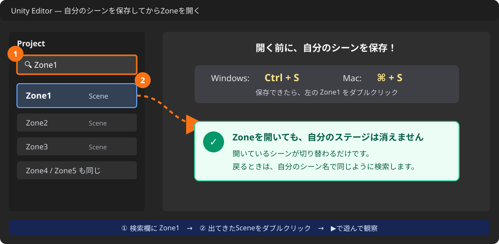
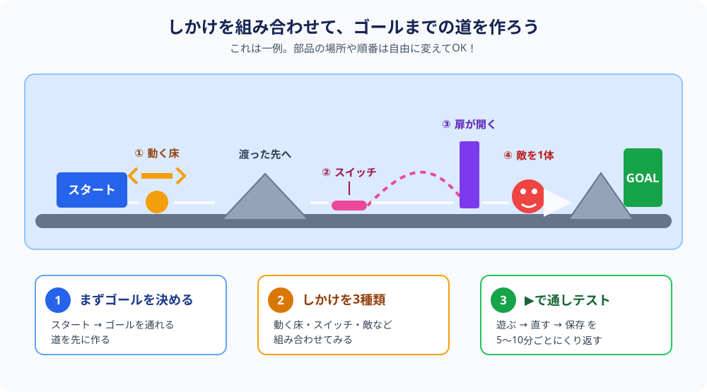

仕上げて発表しよう 〜自分だけのゲームを完成させる〜
🎯 この章でできるようになること
- サンプルゲーム（Zone1〜5）を「開発者の目」で遊んで、しかけの使い方のアイデアを盗める
- この教科書で学んだ部品を組み合わせて、自分のステージを完成させられる
- 作品を発表して、工夫したポイントを一言で伝えられる
ついに最終回。
新しい操作は、今日はもう出てきません。
今日やることはひとつ——今まで覚えたぜんぶを使って、キミだけのステージを完成させて、発表する。
ゲーム開発者としての、最初の「作品発表の日」だ。

6-1. プロの技を観察しよう 〜Zone1〜5探検〜
このキットに入っているオブジェクトのほとんどは、PressurePadで使った「イベント」のしくみに対応しています。
そして、サンプルゲームのステージZone1〜5には、その使い方のお手本がぎっしりつまっている。
自由制作の前に、まずはプロの仕事を「観察」しに行こう。
⚠️ まず自分のステージを保存（Ctrl + S⌘ + S）！
それから、Projectウィンドウの検索ボックスに「Zone1」と入力して、出てきたシーンをダブルクリックで開こう。
Zone2〜5も同じ方法で開けるよ。

▶で再生して遊びながら、こんなところに注目してみよう。
- この扉は何で開いた？（感圧パッド？ スイッチを攻撃？）
- 敵はどこに置かれている？（せまい足場の上、箱の近く、扉の前…）
- 動く床やワープは、どんな場面で使われている？
- 「難しいけど楽しい」場所は、何がそう感じさせている？
「いいな」と思った物があったら、停止してシーンビューでクリック→名前を確認→Projectウィンドウで検索。
第5章で覚えた小ワザが、ここで大活躍するよ。
観察して見つけたアイデアを3つ、メモしておこう。
「まね」はずるじゃない。プロのゲーム開発者も、必ず他のゲームの研究から始めるんだ。
まねして、自分なりに変える——それがオリジナルへの近道。
6-2. 道具はぜんぶそろってる 〜部品カタログ〜
この教科書で学んだ部品を、一覧にまとめました。
自由制作の「メニュー表」として使ってね。
| 部品 | できること | 学んだ章 |
|---|---|---|
| タイル（Tile Palette） | 地面・足場・崖を描く。ステージの土台 | 第2章 |
| MovingPlatform | 動く床。ノード追加とLoopで経路も自由自在 | 第3章 |
| Door ＋ PressurePad | 乗ると扉が開く。イベントのしくみ | 第3章 |
| ReusableSwitch | 攻撃すると反応するスイッチ。パッドの代わりに使える | 第3章 |
| Chomper | 接近戦の敵。速さ・視野を調整できる | 第4章 |
| Spitter | 酸のたまを撃つ遠距離の敵 | 第4章 |
| PushableBox ＋ Damager | 押せる箱で敵にダメージ。トラップ作りに | 第4章 |
| 装飾スプライト | 世界の雰囲気づくり（Art > Sprites > Environment） | 第5章 |
| TransitionStart／End | ワープ（テレポート）。隠し部屋やショートカットに | 第5章 |
6-3. 自由制作タイム 〜ステージを完成させよう〜
ここからは、キミが監督でありデザイナーであり、テストプレイヤー。
進め方のコツを3つだけ置いておきます。
まず、スタート地点とゴール地点を決めよう。
「左はしから出発して、右おくの遺跡にたどり着いたらクリア」みたいに、自分で宣言するのが大事。
ゴールが決まると、途中に置くべきしかけも自然と見えてくるよ。
部品は単品で置くより、組み合わせると何倍も面白くなる。
- 動く床で渡った先にスイッチがあり、撃つと遠くの扉が開く
- Chomperの見張る通路の頭上に箱をスタンバイしておく
- ワープの出口を敵のド真ん中にして、ビックリ演出
- 6-1でメモしたZoneのアイデアを自分流にアレンジ

5〜10分作ったら▶で再生、が黄金ペース。
「最初はやさしく、だんだん難しく」を意識すると、遊ぶ人が最後まで楽しめるステージになる。
そして保存（Ctrl + S⌘ + S）はこまめに！ 発表直前のデータ消失ほど悲しいものはない。
6-4. 発表会をしよう
完成したら、お待ちかねの発表会。
ゲームは「遊んでもらって完成する」ものだから、これも開発の大事な一部だよ。
| 見せる人の心得 | 見る人の心得 |
|---|---|
|
・工夫ポイントを一言で伝えてから遊んでもらう（例:「箱落としトラップが自信作！」） ・操作方法を先に説明する（ A/D移動、スペースジャンプ、O/K攻撃、Eインタラクト）・クリアできなくてもOK。つまった場所は難易度調整のヒントとしてメモ |
・まず良いところを1つ言葉にして伝える ・「ここどうやって作ったの？」と聞くと、お互い勉強になる ・つまったら正直に伝える。それが作者への一番のプレゼント |
6-5. 💪 やってみよう（最終課題）
最終課題: しかけを3種類以上使った自分のステージを完成させよう
6-2の部品カタログから、タイル以外のしかけを3種類以上使って、スタートからゴールまで通しでクリアできるステージを完成させよう。
条件はこの3つ。
- タイル以外の部品を3種類以上使っている
- 自分で通しでクリアできることを確認した
- 発表会で工夫ポイントを一言で紹介した
ヒントを見る
3種類は「Door＋PressurePad」「Chomper」「テレポート」のように、系統のちがう部品を選ぶと遊びが豊かになるよ。
迷ったら6-1の観察メモに戻ろう。Zoneのまねから始めて、自分流に変えれば立派なオリジナルだ。
6-6. 🚨 つまずきポイント集
Zoneのシーンを開いたら、自分のステージが消えた!?
原因: 消えていません。開いているシーンが切り替わっただけ。
直し方: Projectウィンドウの検索ボックスに自分のシーン名を入力して、ダブルクリックすれば戻れるよ。
Zoneを開く前に保存していれば、何も失われていないから安心して。
どんなステージにすればいいか、思いつかない
直し方: ゼロから考えなくていい。
6-1の観察メモから1つ選んで、まずそっくりまねて作る→動いたら1か所だけ自分流に変える。
「まねて、変える」が創作の王道。部品カタログを眺めて「これとこれを組み合わせたら？」と考えるのも効くよ。
しかけが増えすぎて、どれが何だかわからなくなった
直し方: ヒエラルキーの名前を整理しよう。
Door_1、PadForDoor_1、Warp_ToRoom のように「役割がわかる名前」に変えるだけで、頭の中もスッキリする。
新しいしかけは1つ置くごとに再生して確認すると、原因探しがラクだよ。
「難しすぎてクリアできない」と言われた
直し方: それは貴重なテスト結果！
敵のSpeedを下げる、足場を1マス近づける、敵の数を減らす——少しずつ調整して、また遊んでもらおう。
難易度調整も立派なゲームデザイン。プロも同じことをしています。
発表の直前に、しかけが動かなくなった
直し方: あわてない。まず最後にさわった物を思い出して確認。
Ctrl + Z⌘ + Z で直前の操作を取り消せる。
保存してあれば、シーンを開き直して保存時点に戻るのも手だよ。
💡 15分たっても直らないときは、次の「AIを味方につけよう」の方法で相談してみよう。
6-7. 🤖 AIを味方につけよう
最終回のAIは「デザイン相談役」。
手が止まったときの壁打ち相手として使うと、アイデアがどんどん転がり出すよ。
この章でのAIの使い所
✅ 良い使い方 — 自分で15分考えてわからなかったら聞く
- アイデアの壁打ち: 「持っている部品」を伝えて、組み合わせのアイデアを出してもらう
- 発表の準備: 工夫ポイントの伝え方を相談する（読むのは自分の言葉で！）
そのままコピペで使えるプロンプト（AIへの指示文）の例:
使える部品は、動く床・感圧パッドで開く扉・攻撃で反応するスイッチ・Chomper・Spitter・押せる箱（Damager付き）・テレポートです。
これらを2つ以上組み合わせた「あっと驚くしかけ」のアイデアを、初心者が30分で作れる範囲で3つ提案してください。
自信作は「崖の上から箱を落として敵を倒すトラップ」です。
聞いている人が遊びたくなる紹介のしかたの例を、2つ教えてください。
🚫 やめておこう
- ステージの全体像を丸ごとAIに決めてもらう（最終作品はキミのアイデアで！ 相談はOK、丸投げはNG）
- AIの答えを動かして確かめずに信じる（必ず自分の画面で再生して確認）
6-8. ✅ チェックリスト
全部チェックできたら——全6章、修了おめでとう！！ 🎉🎉🎉
ふり返ってみて。まっさらなシーンから始めて、キミは地形を描き、しかけを組み、敵を配置し、世界を飾り、ワープでつなぎ、作品として発表した。
これはもう、まぎれもなくゲーム開発者の仕事そのものだ。
そして、ここがゴールじゃない。
2D Game Kitにはまだまだ触れていない部品がたくさんあるし、その先には「自分でキャラクターや敵を作る」世界も待っている。
下の「もっと知りたい人へ」が、次の冒険の地図だよ。
作りたいものがある限り、キミの開発は続く。またどこかのステージで会おう！
6-9. 📚 もっと知りたい人へ 〜次の冒険の地図〜
- Unity Learn「2Dゲームキットウォークスルー」 — この教科書全体の元になっている公式ガイド。手順10がこの章の範囲だよ
- 2Dゲームキットリファレンスガイド — キットの全部品・全パラメーターの辞典。「このしかけ、もっと細かく調整したい」と思ったらまずここ
- 高度なトピック — キットを改造して、新しい要素を追加したくなった人への上級ガイド
画像出典: Unity Learn『2Dゲームキットウォークスルー』（Unity Technologies）／画像の表示にはインターネット接続が必要です